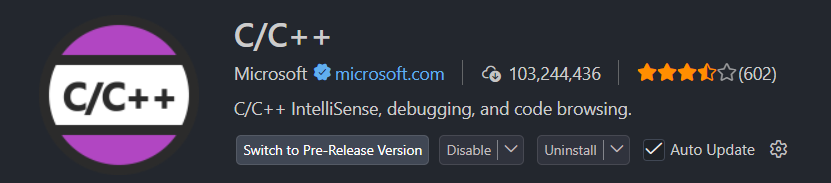
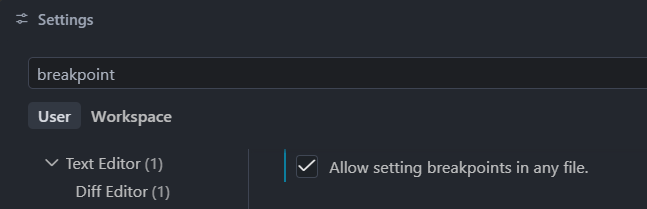
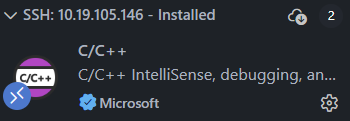

实验一 搭建实验环境
本课程使用 xv6-riscv 学习操作系统的基本原理。 xv6 是一个面向教学的、类 Unix 的小型操作系统。它保留了进程、虚拟内存、系统调用、 文件系统和设备驱动等操作系统的核心概念，同时代码规模远小于 Linux，适合阅读、修改和实验。
本次实验不要求修改 xv6 内核。你需要搭建 Linux 实验环境，安装 RISC-V 交叉编译工具链和 QEMU，成功编译并启动 xv6，最后在 xv6 的 shell 中完成若干基本操作。
实验目标
完成本次实验后，你应该能够：
使用
riscv64-unknown-elf工具链交叉编译 RISC-V 程序；使用
qemu-system-riscv64启动 xv6；识别 xv6 源码仓库的主要目录；
在 xv6 shell 中运行程序并进行简单的文件操作。
实验报告要求
实验报告至少应包含以下内容：
实验环境类型（Linux 真机、WSL 2 或虚拟机）、Ubuntu 版本和宿主机体系结构；
RISC-V 交叉编译器与 QEMU 的版本信息；
xv6-riscv 的 Git 提交短哈希；
xv6 成功编译、启动并进入 shell 的截图；
xv6 shell 基础操作的命令、输出截图和对管道、重定向的解释；
实验中遇到的问题、定位过程和解决方法；如果没有遇到问题，也应简要总结本次实验的收获。
提交前检查
橙色提示框是实验必做内容。截图应包含命令和输出，文字应清晰可辨； 不要只放截图而不说明操作目的和结果。
实验工具
系统环境
本课程优先推荐使用 Ubuntu 22.04 LTS 或 Ubuntu 24.04 LTS。你可以选择 Linux 真机、Windows Subsystem for Linux （WSL 2），或者 VMware 等虚拟机。三种方式完成实验的体验基本相同。
如果你是初次配置 Ubuntu ，可以更换合适的国内源。
更换合适的国内源
更换了国内的软件镜像源后，通过包管理器安装软件会更快。Ubuntu 官方源在国内访问速度较慢，甚至可能无法访问。 在更换国内软件镜像源时，使用与系统不相符的源会导致工具包版本冲突, 强行安装将会损坏系统。 所以请你仔细核对 Ubuntu 版本和对应的国内镜像源版本，否则会损坏你的系统。
更换合适的国内源后，在 Ubuntu 中打开终端，执行：
sudo apt update
sudo apt install git build-essential
安装 RISC-V GNU 工具链
打开 riscv-gnu-toolchain Releases，在一个较新的 Release 中展开
Assets。按照自己的 Ubuntu 版本下载下面两个文件之一：
Ubuntu 22.04：
riscv64-elf-ubuntu-22.04-gcc.tar.xzUbuntu 24.04：
riscv64-elf-ubuntu-24.04-gcc.tar.xz
这里必须选择 riscv64、elf 和 gcc 的组合。elf 表示面向裸机环境，符合 xv6
内核和用户程序的构建需求；不要下载 riscv32、glibc、musl、picolibc 或
llvm 版本。Release 页面还会给出文件的 SHA-256 值，可以用来检查下载是否完整：
cd ~/Downloads
sha256sum riscv64-elf-ubuntu-24.04-gcc.tar.xz
上面以 Ubuntu 24.04 为例；使用 Ubuntu 22.04 时替换文件名。将终端输出与发布页中对应文件下方的
sha256 值比较，两者应完全相同。
创建安装目录，并把压缩包解压到 ~/.local/riscv：
mkdir -p ~/.local/riscv
tar -xJf ~/Downloads/riscv64-elf-ubuntu-24.04-gcc.tar.xz \
-C ~/.local/riscv --strip-components=1
ls ~/.local/riscv/bin/riscv64-unknown-elf-gcc
使用 Ubuntu 22.04 时，将命令中的 24.04 改为 22.04。-xJf 表示解压 .tar.xz；
--strip-components=1 去掉压缩包最外层的 riscv 目录，使编译器最终位于
~/.local/riscv/bin。
安装 xPack QEMU RISC-V
打开 xPack QEMU RISC-V Releases，选择较新的正式版本，在 Assets
中下载与 宿主机架构 对应的 GNU/Linux 压缩包。以 9.2.4-1 为例：
发布页中的版本号可能已经更新，应以下载页面实际显示的最新正式版本为准。下面以
9.2.4-1-linux-x64 为例，将其解压到固定目录 ~/.local/qemu-riscv：
mkdir -p ~/.local/qemu-riscv
tar -xzf ~/Downloads/xpack-qemu-riscv-9.2.4-1-linux-x64.tar.gz \
-C ~/.local/qemu-riscv --strip-components=1
ls ~/.local/qemu-riscv/bin/qemu-system-riscv64
添加 PATH 环境变量
Linux 只会在 PATH 所列目录中查找命令。使用文本编辑器打开 Bash 配置文件：
vim ~/.bashrc
在文件末尾加入下面一行：
export PATH="$HOME/.local/riscv/bin:$HOME/.local/qemu-riscv/bin:$PATH"
保存配置文件，让配置在当前终端立即生效：
source ~/.bashrc
这项配置以后会在每次打开 Bash 时自动生效，只需添加一次。使用下面的命令检查实际找到的程序：
which riscv64-unknown-elf-gcc
which qemu-system-riscv64
输出应分别位于 /home/你的用户名/.local/riscv/bin 和
/home/你的用户名/.local/qemu-riscv/bin。如果系统中曾经安装过其他同名工具，which 还可以
确认当前优先使用的是本实验刚安装的版本。
验证安装结果
安装完成后执行：
git --version
make --version
riscv64-unknown-elf-gcc --version
riscv64-unknown-elf-ld --version
qemu-system-riscv64 --version
只要每条命令都能输出版本信息且没有出现 command not found，就说明基本工具已经就绪。
具体版本号可能随着发布页更新而变化，不必与讲义示例完全相同。
检查并记录实验环境
依次执行 cat /etc/os-release、uname -m、
which riscv64-unknown-elf-gcc、which qemu-system-riscv64、
riscv64-unknown-elf-gcc --version 和 qemu-system-riscv64 --version。
在实验报告中说明自己选择的是 Linux 真机、WSL 2 还是虚拟机，并附上能够看清上述信息的终端截图。
获取 xv6-riscv
获取 MIT 官方 xv6-riscv 源码：
git clone https://github.com/mit-pdos/xv6-riscv.git
cd xv6-riscv
初识源码目录
在 xv6-riscv 仓库中执行 ls，可以看到几个重要部分：
kernel/xv6 内核源代码，包括进程管理、虚拟内存、文件系统、系统调用、陷阱处理和设备驱动等。
user/xv6 用户态程序及其支持库，例如 shell、
ls、cat和echo。这些程序运行在 xv6 中， 不是 Ubuntu 中的同名程序。mkfs/构造 xv6 文件系统镜像的工具。
Makefile描述如何编译内核和用户程序、生成文件系统镜像，以及如何启动 QEMU。
READMExv6 项目简介和构建说明。
编译并启动 xv6
确认当前目录是 xv6-riscv 仓库根目录，然后执行：
make qemu
Make 会调用 riscv64-unknown-elf 工具链编译内核和用户程序，生成文件系统镜像，再启动
qemu-system-riscv64。第一次编译会输出较多命令。成功启动后，可以看到类似下面的内容：
xv6 kernel is booting
hart 1 starting
hart 2 starting
init: starting sh
$
hart 是 RISC-V 对硬件线程的称呼。最后的 $ 是 xv6 shell 的提示符，表示 xv6 已经启动成功，
正在等待命令。不同源码版本的启动信息可能略有差异。
第一次启动 xv6
执行 make qemu，等待 xv6 启动并出现 $ 提示符。
将包含 xv6 kernel is booting 和 shell 提示符的终端截图放入实验报告。
退出 xv6 和 QEMU
xv6 默认没有 shutdown 命令。退出 QEMU 时，先按 Ctrl+a，松开后再按 x。
这是两个依次完成的按键动作，不是同时按下三个键。退出后会重新退回到 shell。
不要直接关闭正在写入的虚拟机
本实验中的简单操作通常不会造成问题，但养成正确退出 QEMU 的习惯很重要。 如果终端没有响应，先确认自己当前处于 xv6 shell、QEMU 控制台还是 Ubuntu shell。
初识 xv6 shell
再次执行 make qemu 进入 xv6。先输入：
ls
你看到的是 xv6 文件系统根目录的内容。目录中的 cat、echo、grep、ls、mkdir、
rm、sh 和 wc 等都是编译进 xv6 文件系统镜像的用户程序。
命令、参数与进程
在提示符后执行：
echo hello xv6
echo one two three | wc
第一条命令启动 echo 程序并传入两个参数。第二条命令使用管道 |，shell 会创建管道并启动
echo 与 wc 两个进程，把前一个程序的输出连接到后一个程序的输入。
文件与目录
继续完成下面的操作：
mkdir lab1
cd lab1
echo hello xv6 > hello.txt
cat hello.txt
grep hello hello.txt
wc hello.txt
ls
rm hello.txt
cd ..
这里的 > 把程序的标准输出重定向到文件；cat 读取并显示文件；grep 查找包含指定字符串的行；
wc 统计行数、单词数和字节数。xv6 的工具只实现了教学所需的基本功能，支持的参数远少于
Ubuntu 中的 GNU 工具。例如，xv6 中没有完整实现日常 Linux 环境里的所有命令和选项。
完成 xv6 shell 基础操作
按顺序完成本节的目录创建、输出重定向、文件查看、字符串查找、统计和删除操作。
在实验报告中附上完整操作及输出的截图，并用自己的语言说明
| 与 > 分别完成了什么工作。
两个 shell 是同一个程序吗？
Ubuntu 和 xv6 中都能输入 ls、echo 等命令。
它们调用的是同一份可执行文件吗？这些文件分别为哪一种指令集编译？
宿主机与 xv6 文件系统
在 xv6 中创建的 hello.txt 不会直接出现在 Ubuntu 当前目录中。xv6 使用的是 QEMU 挂载的
fs.img 文件系统镜像。Ubuntu 负责保存这个镜像文件，而 xv6 内核负责解释镜像内部的目录、
文件和数据块。后续文件系统实验会进一步研究它的实现。
当你修改 user/ 中的程序并重新执行 make qemu 时，Makefile 会把相应程序重新编译并放入
文件系统镜像。修改 kernel/ 中的代码则会改变下一次启动的 xv6 内核。
VS Code 调试 xv6
直接使用 GDB 调试 xv6 内核和用户程序比较复杂，推荐使用 VS Code 调试，操作更简单，也更加直观。
安装插件
1. 安装 C/C++ 扩展
在 VS Code 的扩展视图中搜索并安装由 Microsoft 发布的 C/C++ 扩展。
{kind=link}

确认发布者为 Microsoft，并完成扩展安装。
添加调试配置
在 VS Code 中打开 xv6-riscv 仓库根目录，创建 .vscode 目录，再创建 launch.json 和 tasks.json 文件，分别填入下面的配置。
{
"version": "0.2.0",
"configurations": [
{
"name": "xv6debug",
"type": "cppdbg",
"request": "launch",
"program": "${workspaceFolder}/kernel/kernel",
"cwd": "${workspaceFolder}",
"MIMode": "gdb",
"miDebuggerPath": "/opt/riscv/bin/riscv64-unknown-elf-gdb",
"preLaunchTask": "xv6build",
"setupCommands": [
{
"description": "切换到 xv6 根目录",
"text": "cd ${workspaceFolder}",
"ignoreFailures": false
},
{
"description": "加载 xv6 自动生成的 GDB 配置",
"text": "source ${workspaceFolder}/.gdbinit",
"ignoreFailures": false
}
],
"logging": {
"engineLogging": true,
"trace": true,
"traceResponse": true
}
}
]
}
其中第13行，调试器的路径需要根据你安装的 RISC-V 工具链实际位置修改。你可以通过 which riscv64-unknown-elf-gdb 查看实际路径。
{
"version": "2.0.0",
"tasks": [
{
"label": "xv6build",
"type": "shell",
"isBackground": true,
"command": "make qemu-gdb",
"problemMatcher": [
{
"pattern": [
{
"regexp": ".",
"file": 1,
"location": 2,
"message": 3
}
],
"background": {
"beginsPattern": ".*Now run 'gdb' in another window.",
"endsPattern": "."
}
}
]
}
]
}
3. 允许在任意文件中设置断点
为了在汇编代码中设置断点，在 VS Code 设置中搜索 breakpoint，然后勾选
Allow setting breakpoints in any file.。完成后即可直接在 VS Code 中调试 xv6。
{kind=link}

启用允许在任意文件中设置断点的选项。
常见问题
Unable to locate package先确认使用 Ubuntu 22.04/24.04，并已成功执行
sudo apt update。如果网络访问软件源失败，先检查 Linux 环境的网络连接。tar: ... Cannot open: No such file or directory压缩包不在命令指定的位置，或者版本号、Ubuntu 版本、宿主机架构与文件名不一致。执行
ls ~/Downloads查看实际文件名和位置，再修改解压命令；不要原样照抄与自己下载文件不同的示例名称。riscv64-unknown-elf-gcc: command not found执行
ls ~/.local/riscv/bin检查工具链是否正确解压；确认~/.bashrc中的PATH没有 拼写错误，然后执行source ~/.bashrc和which riscv64-unknown-elf-gcc。qemu-system-riscv64: command not found执行
ls ~/.local/qemu-riscv/bin检查 QEMU 是否正确解压；确认~/.bashrc中的PATH配置已经生效，再执行which qemu-system-riscv64。cannot execute binary file: Exec format error通常表示下载的预编译程序与宿主机架构不匹配。重新执行
uname -m，并检查下载的是linux-x64还是linux-arm64版本；RISC-V 工具链同样必须能够在当前宿主机架构上运行。- 执行
make qemu后停在$ 这不是卡死。
$表示 xv6 已经启动成功，正在等待你输入 xv6 shell 命令。- 不知道自己在哪个 shell
xv6 shell 通常只有简单的
$提示符，且可用命令很少；Ubuntu 的提示符通常包含用户名、主机名 和当前路径。可以尝试uname -a：Ubuntu 支持该命令，而标准 xv6 通常没有这个程序。- 重新编译后行为异常
退出 QEMU，在 xv6-riscv 根目录执行
make clean，再执行make qemu。不要在 QEMU 仍在 运行时删除构建产物。
扩展阅读
阅读源码时，遇到不熟悉的函数或机制，可以先阅读手册和对应源文件。操作系统实验尤其需要养成 RTFM （阅读手册）和 RTFSC （阅读源代码）的习惯。
远程环境安装
如果通过 VS Code 远程连接 WSL 2 或虚拟机，需要在 远程环境 中安装扩展，而不是只安装在本地环境中。

扩展面板中显示远程主机名称和
Installed，表示扩展已安装到当前远程环境。